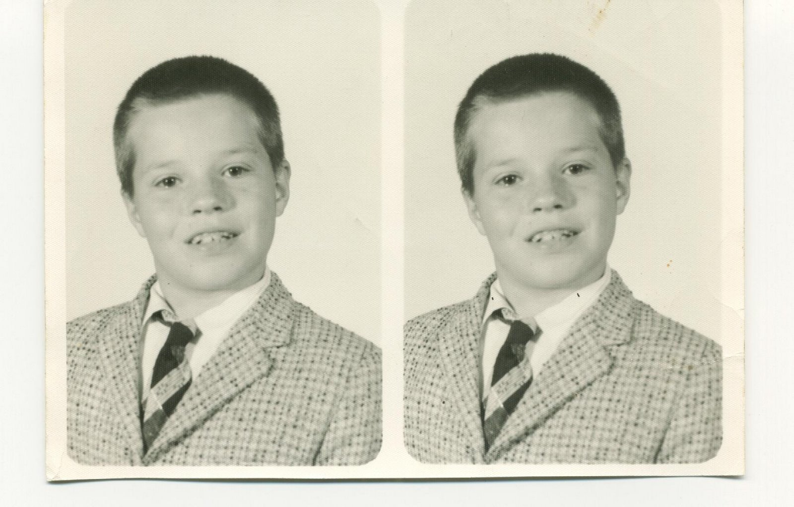
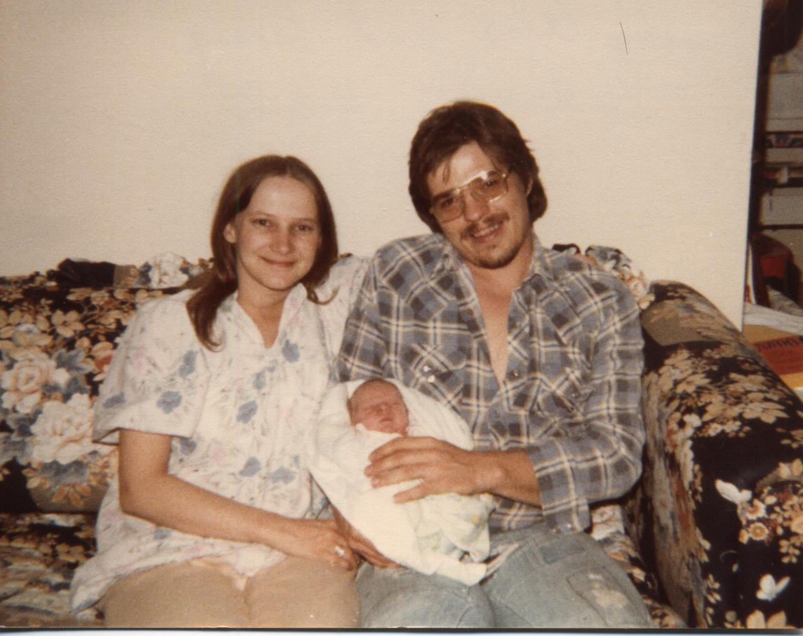
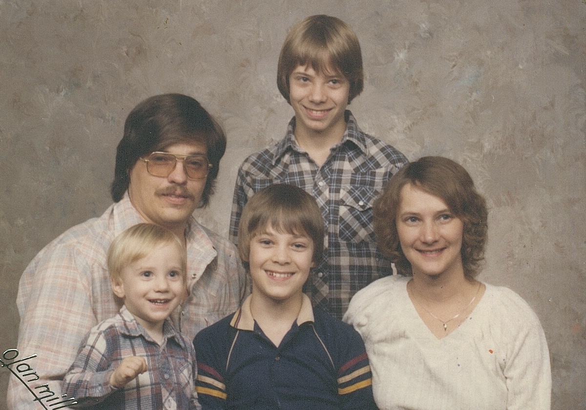
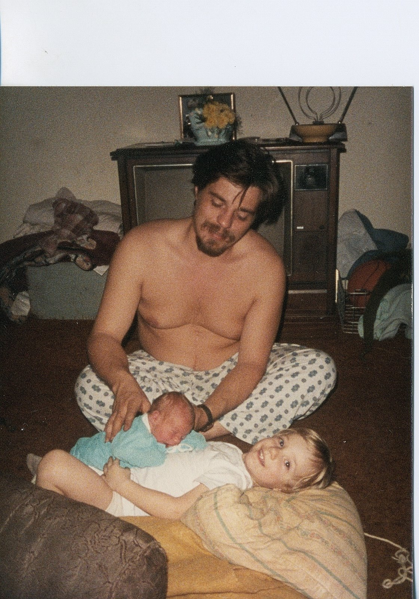
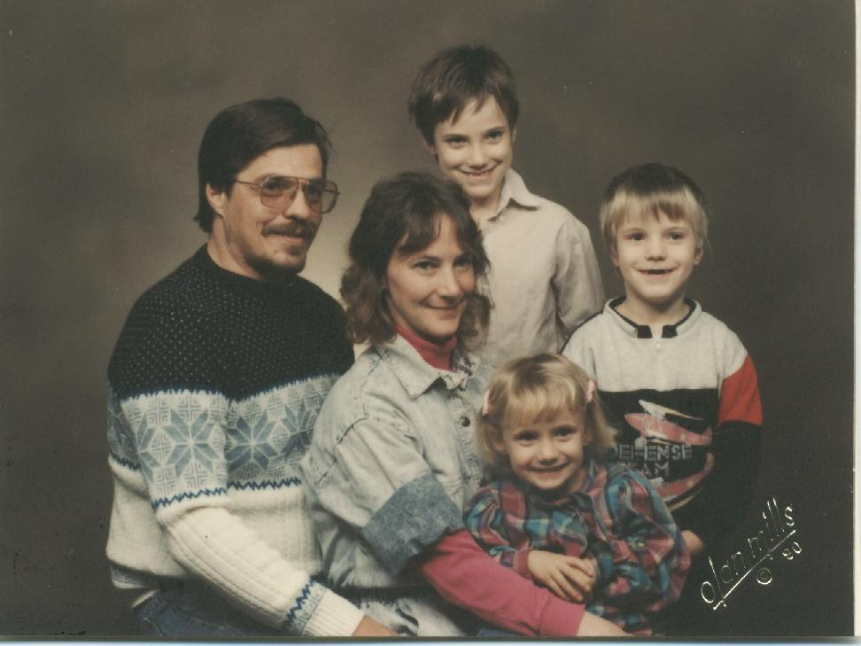
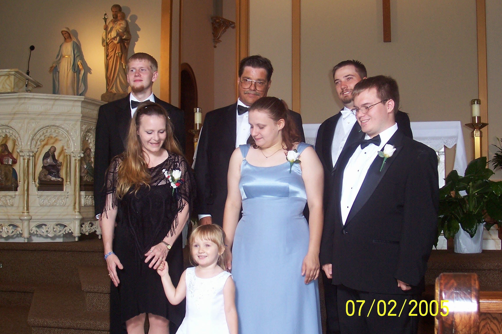
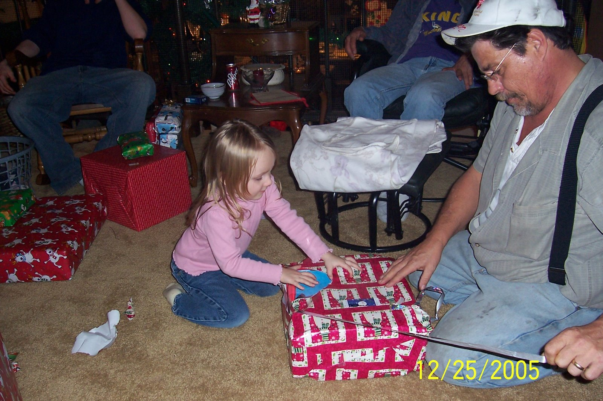
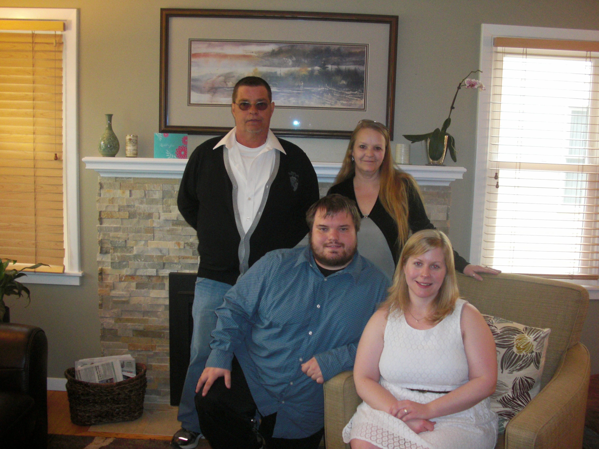
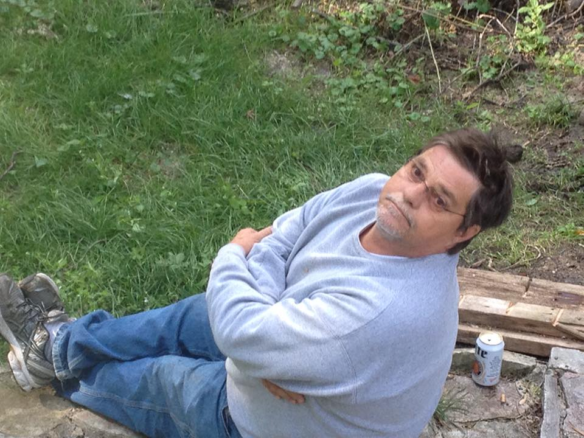

Early Years
Douglas Wayne Benson was born in 1952 at ? in ?. Doug's parents, Marvin Benson (1928-2006) and Lois Benson (1920-2013). He went to school where he struggled with some subjects but got along well enough to pass.
 Oct 20 1952Young Adult
As a young adult Doug worked with Marv on the family business. They constructed homes in Anoka, dug wells, and did lots of construction like work in Anoka County. He started doing this when he was still in school. This eventually became a trucking business where Benson Trucking was the company and they'd regularly haul dirt and other things from place to place.
1964-1980Met Diane
Doug met Diane Irwin working in St. Francis driving bus. She already had two kids, Russ and Eric. Diane and Doug were excited to extend that family.
 1980
1980
Alex is born
Doug and Diane had their first child together, Alex Michael Benson.
Pictured below is Diane, Doug, and Alex.
 1981Family Family Portraittrat
Pictured below; (top) Doug, Russ, (bottom) Alex, Eric, Diane
 1983Jace is born
Doug and Diane had their second child together, Marjace Robert Marvin Benson.
Pictured below is Doug, Marjace, Alex.
 1984Anna is born
Doug and Diane had their last child, Anastasia.
1985Family Portrait
Pictured below; (top) Doug, Alex, (bottom), Diane, Anna, Jace.
 1990New Beginnings
Things changed between Doug and Diane and they divorced. A few years after the divorce, Doug met Linnea Trupe who had two children, Angie and Brandon. Doug and Linnea moved in with eachother after dating a few months and got married in their backyard at 506 Madison St., Anoka MN.
Feb 14Family Portrait at Alex's wedding
Pictured below; (top) Brandon, Doug, Alex (middle), Linnea, Anna, Jace, (bottom) Haylee.
 July 02 2005Christmas
Pictured below; (top) Brandon, Doug, Alex (middle), Linnea, Anna, Jace, (bottom) Haylee.
 December 25 2005Jace's wedding
Pictured below; (top) Doug, Linnea, (bottom) Jace, Rachel.
 June 2013Final Section
Obituarary Benson, Douglas W. age 62, of Lino Lakes. Retired from the Met Council after 34 years. Preceded in death by parents, Marv and Lois. Survived by loving wife, Linnea; children, Alex (Heather), Angela (Travis) Danielson, MarJace (Rachel), Anna (Nick) Farnum and Brandon (Rachel) Trupe; step-sons, Eric (Becky) and Russ (Kerry) Irwin; grandchildren, Wyatt, Hunter, Joey, Avery, Haylee, Noah, Matthew, Logan, Chris and Lucas; sister, LaVonne (John) Klucking; brothers, Greg (Judy) and Brad (Cindy); best friends, Jim Brletich and Glenn Augustine; many other family and friends.
 January 04, 2015